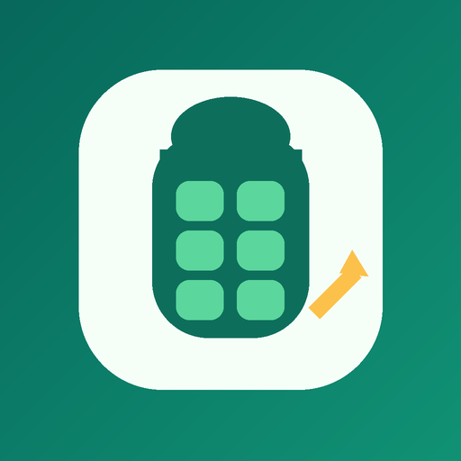

FLACHER BAUCH
Stärker. Gesünder. Du.
Heute
Dein Tagesüberblick
Erfasste Werte – unvollständige Einträge sind kein Tagesgesamtwert.
🏆 Dein Ziel
🎯Flacher Bauch & Muskeln aufbauen
Der Fortschritt wird anhand deiner Messwerte ermittelt – keine erfundene Prozentzahl.
Deine Einträge
Essen
Was esse ich heute?
Schnelle und alltagstaugliche Ideen für unterwegs oder zu Hause.
Etwas anderes gegessen?
Wasser
Dein Wasser heute – immer in 250-ml-Schritten.
0 ml
Andere Getränke
Bauch
📏 Bauchumfang
Messe entspannt auf Nabelhöhe.
Verlauf Bauchumfang
Mess-Tipp
Einmal pro Woche morgens, entspannt, am Ende einer normalen Ausatmung messen. Nicht den Bauch einziehen.
Mehr
Weitere Funktionen
Darunter findest du dein bestehendes Profil, Einstellungen und Backup.
Dein Tag auf einen Blick
Kalorien sind Schätzungen. Bewegung wird nicht automatisch von den Mahlzeiten abgezogen.
Schnell erfassen
Weitere Tageswerte
Apple Health: noch nicht direkt verbunden. Schritte und Schlaf lassen sich manuell erfassen.
Wie geht es Dir heute?
💚 Gitys Coaching
Persönliche Hinweise anhand Deiner Einträge. Noch keine direkte KI-Verbindung.
📸 Restaurantessen fotografieren
Foto aufnehmen und Gericht notieren. Eine automatische KI-Nährwertschätzung ist noch nicht aktiviert.
Bei unbekannten Kalorien als Schätzung offen lassen. Das Foto wird nicht automatisch analysiert oder an Gity übertragen.
Deine Einträge heute
Öffnet das iPhone-Teilen-Menü oder kopiert den Bericht. Du sendest ihn selbst an unseren Chat – kein automatischer Zugriff.
📈 Dein Fortschritt
📊 Wochenbericht
Die letzten 7 Tage inklusive heute. Fehlende Einträge bedeuten nicht automatisch null gegessen.
Deine letzten 14 Tage
Deine Entwicklung
👤 Mein Profil
Dein Profil bleibt auf diesem Gerät gespeichert. Sensible Angaben sind freiwillig.
🥗 Meine Lebensmittel
Einmal speichern, danach schnell wiederverwenden. Strichcodes und QR-Codes können bei unterstützten Geräten direkt gescannt werden.
Deine Ziele
Startwert 1'900 kcal ist eine Schätzung, keine medizinische Vorgabe. Ziel nach Verlauf und Wohlbefinden anpassen.
Daten sichern
Deine Einträge bleiben nur in diesem Browser auf diesem Gerät gespeichert. Sichere sie regelmässig.
iPhone & Datenschutz
Kein Server, kein Konto, keine automatische Apple-Health-Verbindung. Deine Daten werden nicht an ChatGPT gesendet, solange Du nicht selbst «Tagesbericht an Gity senden» auswählst.